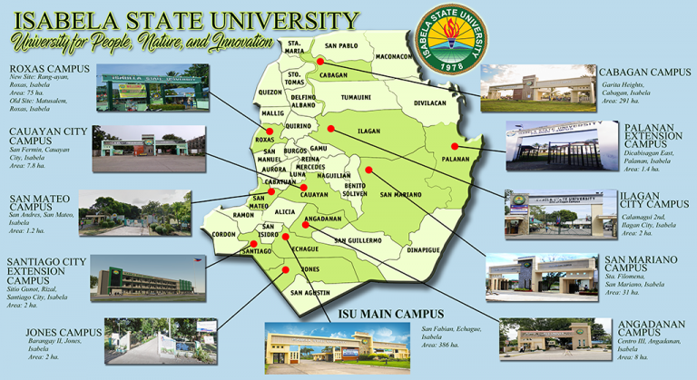

Office of the President
MESSAGE FROM THE PRESIDENT
The Isabela State University (ISU) envisions as a leading Research University in the ASEAN Region by 2024. Focused with its vision, the University has endeavored to be faithful in its mission to develop globally competitive human, technological resources and services through quality instruction, innovative research, responsive community engagement and viable resource management programs for inclusive growth and sustainable development.
It capitalizes in educating and training the students to become competent professionals who are equipped with the appropriate knowledge, values, skills and technology needed to help improve the productivity and the quality of life.
In doing so, the University’s Instruction, Research & Development, Extension & Training and Administration, has adopted the strategic goal of “strengthening research culture, foster excellence and leadership for academic advancement and sustainable countryside development.”
ISU has gained monumental achievements over the course of time, which set a perceptive course for the University’s response to the evolving development needs while materializing its vision. Highlights of these accomplishments illustrate ISU’s commitment to One ISU for Quality and Relevance.Instruction
Endeavoring to implement universal access to quality higher education, the university is determined to contribute and make quality education accessible to all who have the motivation to become learned, skilled, productive, innovative, and valuable members of society.
In confirmation, ISU is recognized as one of the top ranking SUCs in the country. ISU is committed in subjecting its program offerings to accrediting agencies to foster quality, transparency and excellence. Moreover, ISU was awarded Center of Development in Agriculture, Information Technology and Education.
ISU also delivers globally engaged education programs, such as Cultural Exchange and Learning Express Programs, with Temasek Polytechnic and Singapore Polytechnic. It develops global awareness and intercultural understanding, and develop the skills that the students need to be successful, interconnected, active and informed global citizens.
Performance in the board examinations is viewed as one of the measures of the quality of a program. ISU places its mark to various licensure examinations surpassing national passing rates and providing topnotchers.
Research and Development In order to contribute towards the attainment of the University vision and mission, as guided by its core values, University R&D has adopted the strategic goal in bolstering research culture and excellence.
The University as a Higher Education Institution is deemed as a generator of knowledge and technology. ISU has developed 21 research centers involved actively in the conduct of basic, strategic, applied, technology development, technology adaptation and integration, social science and higher education research. With these, the University leads the region in fronting innovative research initiatives.
ISU R&D has also strengthened its research management through improved coordination in planning and programming of research activities, which resulted to the generation of over 84 million worth of funds from various external research funding institutions locally, nationally and internationally.
Institutional mechanisms for technology transfer of mature technologies developed by the University were promoted through the establishment of technology ownership and intellectual property right for the protection of the creative works of scientists and researchers in the University. The University was able to obtain 18 Intellectual Property Registration, 2 patents and registered copyrights, 3 utility model, 8 industrial designs and 5 trademarks.
Extension and Training Services
The ISU has maintained strong programs for extension and training. It has gained positive and satisfactory reputation with regard to its program innovation, community engagement and management.
It is further intensified by its strong leadership not only in the region but also in the national and international networks for extension support, thus hosting the 2nd Philippine Association of Extension Program Implementers, Inc. International Conference & 6th Biennial Convention & General Assembly Meeting.
It has established strong collaboration with other agencies in extension and training initiatives, forwarding sustainable community engagement services which are ably reinforced by the University’s strong culture of research and innovation.
Administrative Services Our administration is banking under a distinctive style of leadership marked with integrity, goodwill, respect, and harmony to make ISU as one of the leading state universities that adhere to good governance. These guiding principles direct ISU to craft its Strategic Development Plan 2024 in building a inclusive, resilient, and sustainable university.
We continued to deliver on our climate commitment, ISU is a recipient of Performance-Based Bonus for the past six (6) years, recommended by the Inter-agency Task force of the government. In terms of infrastructure, the University was able to appropriate around 160 million pesos from GAA funds.
Support for internationalization efforts ranks high on the list of the University’s top management. The University have forged numerous Memoranda of Understanding/Agreement among foreign institutions.
Today, ISU stands as a respected partner of development in the Region. And with the dedicated commitment of its top management, faculty, support staff and stakeholders, the future will see the University soar to even greater heights.
RICMAR P. AQUINO, Ph.D.
University President
 University Development Agenda
Accomplishment Reports
University and Campus Officials
President's Report 2017-2020
University Development Agenda
Accomplishment Reports
University and Campus Officials
President's Report 2017-2020
Mandate,Vision and Mission

Mandate
The University shall provide advance instruction in the arts, agriculture and natural sciences as well as in the technological and professional fields. This mandate is in accordance to Presidential Decree Nos. 1434 and 1437, issued on June 10, 1978 by the then President Ferdinand Marcos, establishing Isabela State University.
Vision
A leading Research University in the ASEAN Region.
Mision
The Isabela State University is committed to develop globally competitive human, technological resources and services through quality instruction, innovative research, responsive community engagement and viable resource management programs for inclusive growth and sustainable development.
Quality Policy
The ISABELA STATE UNIVERSITY endeavors to be a lead University in instruction, research, extension and resource generation through continuous improvement of services.
To uphold the commitment, ISU shall attain the following quality objectives:
Sustain academic excellence and quality in instruction;
Generate research breakthroughs;
Engage in sectoral activities for community development;
Develop products for glocalization;
Support students participation to local and international fora to enhance their potentialities;
Comply with the standards set by statutory, regulatoryand accrediting bodies and;
Review on periodic basis, the Quality Management System (QMS) and gather feedbacks on the level of client satisfaction as basis for continuous improvement.
Revised as per BOR Res. No.: 12, s. 2017
Core Values
Excellence
We conduct our affairs with due diligence, care, and thoughtful engagement in the pursuit of excellence in our academic, research & development and extension services.
Public Engagement
We shall consistently engage the public, mobilizing their participation in our programs and services. We shall seek their voice, recognize its needs, and mobilize their expertise for a sustained and continuing programs and services improvement.
Environmentalism
We put prime value on our living planet. We accept the responsibility, adopt practices to protect the environment, and be made accountable for our action.
Accountabilty
We recognize that working with the University is a unique opportunity and privilege. We acknowledge that our office is a public trust and as such we shall conduct our engagements with the strongest sense of responsibility and submit ourselves accountable to the public and to Almighty God.
Collaboration
We strongly recognize that societal problems are not isolated – in fact, multifaceted
and appropriately addressed through the deployment of multidisciplinary teams in a collaborative synergy in order to ensure efficiency, innovation, and productivity.
Efficiency
We shall constantly seek for more effective and yet most economical ways of pursuing our vision and mission and goals amidst limited resources.
Innovation
We shall constantly seek for new and innovative ways of doing things. Contribute to solving current as well as emerging problems of society. We believe that innovation is the key to our competitiveness in the world.
Integrity
We believe in the value of respect and subscribe to the highest ethical standards of honesty, fairness, truth and justice in all our engagements and as we pursue our mission and vision.
University History
The Isabela State University was established through the Presidential Decree (P.D.) 1434 by the then President Ferdinand Marcos on June 10, 1978 merging two state colleges – Isabela State College of Agriculture (ISCA) in Echague and Cagayan Valley Institute of Technology in Cabagan. The said decree also transferred the college level programs of Isabela School of Arts and Trades (ISAT) in Ilagan; San Mateo Vocational and Industrial School in San Mateo and Jones Rural School in Jones to the new State University. The merger identified Echague campus as the main campus and administrative site, and mandated the University to establish an effective and efficient institution of higher learning that will provide better professional and technical training in agriculture, the arts, sciences, humanities, and technology and in the conduct of scientific researches and technological studies.
In 1999, the CHED Memo Order no. 18 1999 which provides the guidelines for the integration of CHED institutions to State Universities and Colleges (SUCs) was issued. Pursuant to this order, the first CHED supervised institution, the Cauayan Polytechnic College at Cauayan, Isabela, was integrated to the University. In 2002, two more CHED Supervised Institutions were integrated to the system – the Roxas Memorial Agricultural and Industrial School (RMAIS) in Roxas, Isabela, the Delfin Albano Memorial Institute of Agriculture and Technology (DMIAT) in San Mariano, Isabela and the Angadanan Agro-Industrial College (AAIC) in Angadanan, Isabela. Later, through the collaborative efforts of ISU and the local governments of Palanan and Santiago City, two extension units were added to the system-ISU Palanan and ISU Santiago.
The Isabela State University System is strategically located in the middle of the Cagayan Valley region, which is composed of the island province of Batanes, the valley provinces of Cagayan and Isabela and the generally mountainous provinces of Nueva Vizcaya and Quirino. The province of Isabela is composed of 34 municipalities, 3 cities, and 2,292 barangays. Coincidentally, the ISU satellite campuses are situated along the regions “Midrib-Peripheral Growth Centers and Socio Economic Development Zone” where the major urban and commercial centers of the region are located. Another strategic advantage is the University’s proximity to the site of the Regional Agro-Industrial Center (RIC) of Cauayan City, Isabela and its accessibility to Sta. Ana, Cagayan, and the entry point for international trade, and also Tuguegarao City and Santiago City, the two regional trade, financial and commercial centers of the region.Forty-one years after its establishment, the University has become a credible Higher Education Institute (HEI), having been awarded by the Association of Accrediting Agencies of Chartered Colleges and Universities of the Philippines (AACCUP) as the SUC with the most number of accredited programs in 2012 as well as one of the few Level IV SUCs in the country. Also, ISU has been named one among 21 leading SUCs in the Philippines. ISU has recently assumed leadership roles in research not only in Region 02, but in the country and in Asia as well. It is now the host or base agency of two regional research centers: the Higher Education Regional Research Center under CHED and the Cagayan Valley Agricultural Resources Research and Development under PCAARRD-DOST. Having been chosen as the base agency is a recognition of ISU’s superiority and dominance among HEIs in the region in terms of capability in research management and scientific undertakings. Presently, ISU is the seat of at least 12 R and D centers and laboratories, proof of its strong R and D capability. With its educational leadership and pioneering roles in research, along with the strategic location of its satellite campuses in the region, the University has been successfully achieving its vision, mission, and goals and objectives. Today, ISU stands as a credible partner of development in the country and with the dedicated commitment of its faculty, support staff, students and the people behind its success, the future will see the University grow to even greater heights.
ISU HYMN
ISU HYMN
Lyrics by: Prof. Edgardo V. Babaran and Prof. Evangeline P. Juan
Music by: Mr. Constante Tabalba
O glorious seat of learning
In our valley dear
We praise her name
Isabela State University
With rays ever so clear
In grateful strides we bear
Thy standard high that to our quest
For knowledge does strive thy Youth grow excelling
In cities, fields, and mountain sides
We’ll sing and cheer for our dear I.S.U.
Beloved Alma mater
Whose name we hold so dear
Molder of our future leaders
Who build our country’s glory and fame
To thee we all pledge
Our loyalty, faith, and love
And always to cherish and honor thee
Throughout eternity